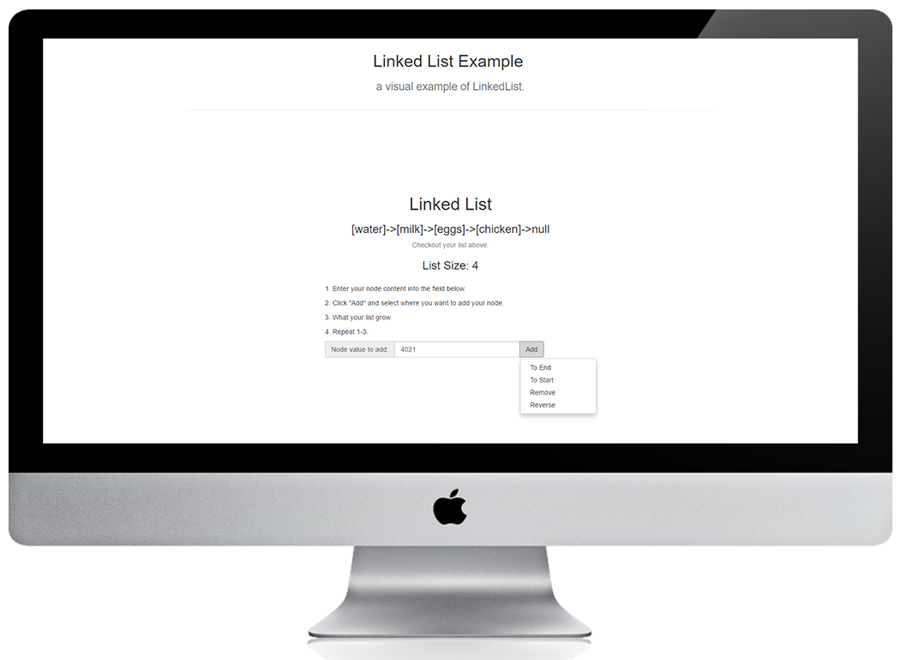

RollCall Mobile Apps
(Android & iOS)
Roll Call is the companion application for an attendance system at Texas Southern University. This app is in operation in over 10 classrooms and assist more than 500 students.
Click to view on Google Play Store
Blacks In Technology
Pactice Mock Up
By request and for practice, Blacks In Technology is a mock up for a website redesign. Leveraging HTML5, CSS3, JADE, SCSS, Angular, Bootstrap, and other tools this site takes a modern look and holds true to responsive concepts.
Click to view site
Javascript Linked List Example
Expanding on AngularJS's Factory this site helps student visualize how a Linked List might work. Hosted using Heroku via Github, uptime may vary.
Click to view site